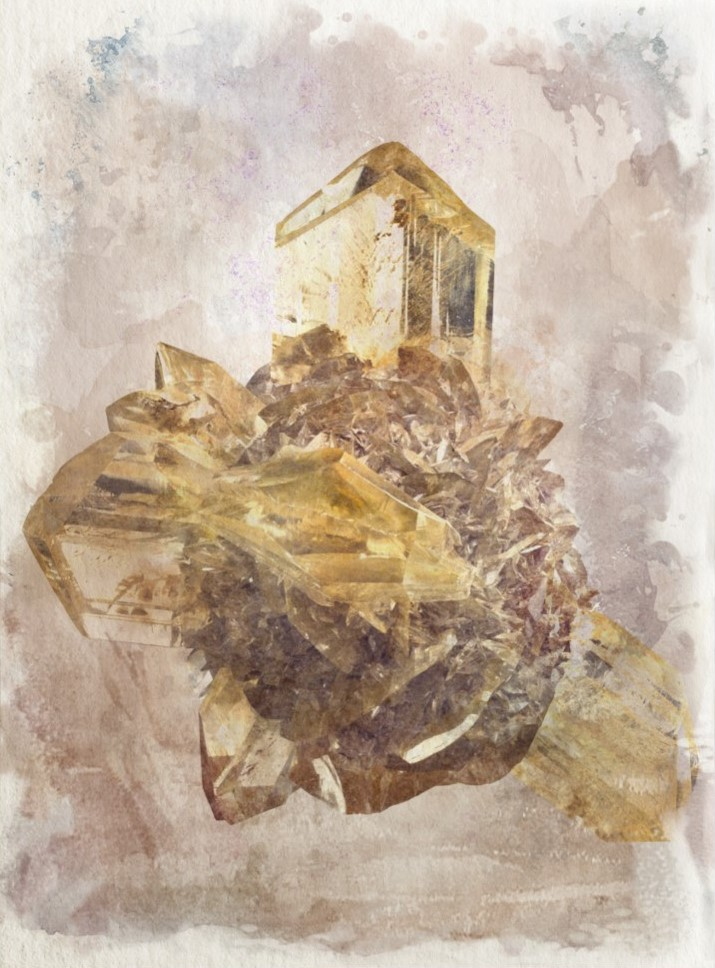

Gypsum
Formed by compressed sediment, it is a mineral used for fertilizer that forms in lagoons and a construction material in lue of wood. It is also used in brewing and baking as well as an inking component.